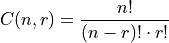
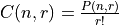

NCR: Combinations#
Introduction#
The number of combinations is defined as the number of ways r objects can be selected from n objects, where order is not important. The number of combinations can be calculated using the following formula,

It is important to note the sequence of letters ab and ba would be considered the same combination of the objects a and b. This is in distinction to permutations, where ab and ba would be considered distinct sequences because a and b appear in different orders. In fact, there is a connection between the number of permutations and the number of combinations of r objects selected from n objects.
From the formula, notice , or rewriting, . In other words, for a given combination of r objects, we need to permute this combination times to account for all the different ways the r objects can be ordered.
Calculator#
Warning
On the the TI-83s and the older model TI-84s, you must first type in n, the numbers of objects from which you are selecting, then insert a NCR function, and finally r, before executing the function. In other words, if you have 10 objects and you want to know the number of ways you can choose 2 of them where order does not matter, you would type into the main screen,
10 NCR 2
Problems#
How many ways can 16 players be divided into two teams of 8 members?
A pizza place offers 14 different toppings. How many different 3 topping pizzas can be ordered?
Five red balls and four green balls are placed into a magical probability box. If three balls are drawn at random without replacement, how many different ways can this be done?
Five red balls and four green balls are placed into a magical probability box. If three balls are drawn at random without replacement, how many outcomes result in the balls being the same color?
In a game of five-card poker, how many different hands can you be dealt?
In a game of poker, how many different ways are there to get a pair, two cards with the same numerical value, on the first two cards dealt?
Solutions#
TODO: jquery these into hidden elements
1: 12870
2: 364
3: 84
4: 14
5: 2598960
6: 78